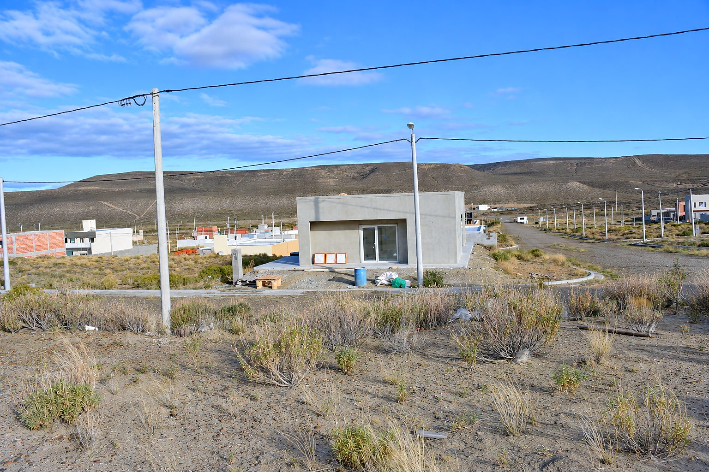

Terreno en venta en barrio cerrado, Comodoro Rivadavia: 363,38 m² con seguridad 24 h
Barrio cerrado de la Cooperativa del Personal Petrolero del Golfo San Jorge, Lote 8, Manzana 1, Comodoro Rivadavia
USD 30.000 + gastos

1 / 6
Superficie363,38 m²
Medidas13,61 x 26,70 m
BarrioCerrado, con seguridad 24 h
UbicaciónFrente a la calle principal
Espacio verdeLateral izquierdo y trasero
ServiciosLuz, agua y cordón cuneta
CloacasPor biodigestor
GasAún no hay
Descripción
Imaginá construir tu casa en un barrio cerrado, con cerco perimetral
y seguridad las 24 horas, y con espacio verde al costado y al fondo de
tu lote.
Es el lote 8 de la manzana 1 del barrio de la Cooperativa del Personal
Petrolero del Golfo San Jorge, ubicado frente a la calle principal de
acceso al barrio. Tiene 363,38 m², con 13,61 m de frente por 26,70 m de
fondo.
Cuenta con energía eléctrica, agua potable, cordón cuneta y cloacas por
biodigestor. Todavía no hay gas: Camuzzi debe ampliar la obra desde
Arenales.
Si querés conocerlo, escribime y coordinamos una visita al lote.
El lote
Lote 8, Manzana 1
363,38 m²: 13,61 m de frente x 26,70 m de fondo
Frente a la calle principal de acceso al barrio
Espacio verde lateral izquierdo y trasero
Servicios
Energía eléctrica
Agua potable
Cordón cuneta
Cloacas por biodigestor
Gas: aún no hay, Camuzzi debe ampliar la obra desde Arenales
Seguridad
Barrio cerrado con cerco perimetral
Servicio de seguridad 24 horas
Ubicación
¿Te interesa este terreno?
Escribime para coordinar una visita o resolver cualquier duda sobre la propiedad.